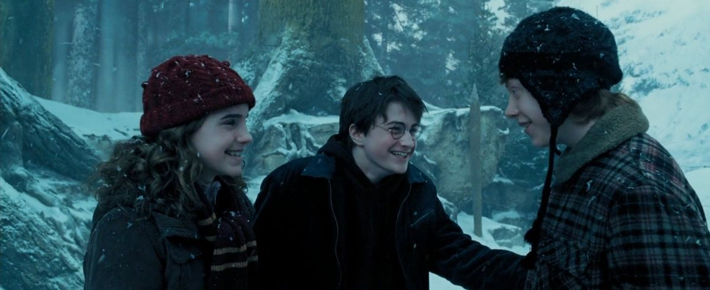

| Data De Lançamento | Diretor | Duração |
|---|---|---|
| 4 de junho de 2004 (Brasil) | Alfonso Cuarón | 2h 22m |
A história acompanha Harry Potter em seu terceiro ano na Escola de Magia e Bruxaria de Hogwarts. Durante o início do ano letivo, Harry descobre que Sirius Black, um perigoso prisioneiro que fugiu da prisão de Azkaban, está à sua procura. Por isso, Hogwarts passa a ser protegida por Dementadores, criaturas sombrias que causam medo e podem consumir a felicidade das pessoas. O filme mistura fantasia, aventura e mistério, mostrando Harry amadurecendo e descobrindo importantes verdades sobre seu passado, sua família e as pessoas em quem pode confiar.
| Personagem | Ator/Atriz | Idade Atual |
|---|---|---|
| Harry Potter | Daniel Radicliffe | 37 anos |
| Rony Weasley | Rupert Grint | 38 anos |
| Hermione Granger | Emma Watson | 36 anos |
| Sirius Black | Gary Oldman | 68 anos |
| Remus Lupin | David Thewlis | 63 anos |
| Draco Malfoy | Tom Felton | 38 anos |
| Rubeos Hagrid | Robbie Coltrane | *72 anos |
| Severus Snape | Alan Rickman | *69 anos |
| Albus Dumbledore | Michael Gambon | *82 anos |
| Peter Pettigrew | Timothy Spall | 69 anos |
Esse filme possui uma identidade visual maravilhosa, uma atmosfera única e uma das histórias mais emocionantes da saga. Alfonso Cuarón conseguiu transformar Hogwarts em um lugar ainda mais misterioso, sombrio e fascinante.
A fotografia, a trilha sonora e a direção são simplesmente impecáveis. Os dementadores são assustadores, o Vira-Tempo proporciona uma das sequências mais inteligentes dos filmes e a revelação sobre Sirius Black muda completamente a maneira como enxergamos o passado de Harry. O que mais gosto é que a história deixa de ser apenas sobre um garoto descobrindo que é bruxo e passa a explorar temas como injustiça, amizade, lealdade e traumas familiares. Sirius representa a possibilidade de Harry finalmente ter alguém que o ame como família, e isso torna tudo muito mais emocionante. Agora, os problemas de adaptação... Como alguém que leu os livros, sinto falta de uma das partes mais importantes de toda a história: os Marotos! Tiago Potter, Sirius, Lupin e Pedro Pettigrew possuem uma história de amizade, lealdade e traição muito mais profunda do que o filme consegue apresentar. A explicação de como eles se tornaram animagos e criaram o Mapa do Maroto merecia muito mais destaque. Também sinto falta do desenvolvimento do relacionamento entre Harry e Sirius, da conquista da Taça de Quadribol pela Grifinória e de várias explicações sobre o passado de Lupin. O filme apresenta os acontecimentos principais, mas não entrega toda a carga emocional que existe por trás deles. Ainda assim, considero essa adaptação extraordinária. A mudança de direção trouxe personalidade à franquia e ajudou a construir o tom mais maduro que os filmes seguintes desenvolveriam.
Minha conclusão: talvez seja um dos filmes mais bonitos e artisticamente interessantes da saga. Ele perde detalhes importantes do livro, mas ganha muito em atmosfera, direção e impacto visual.